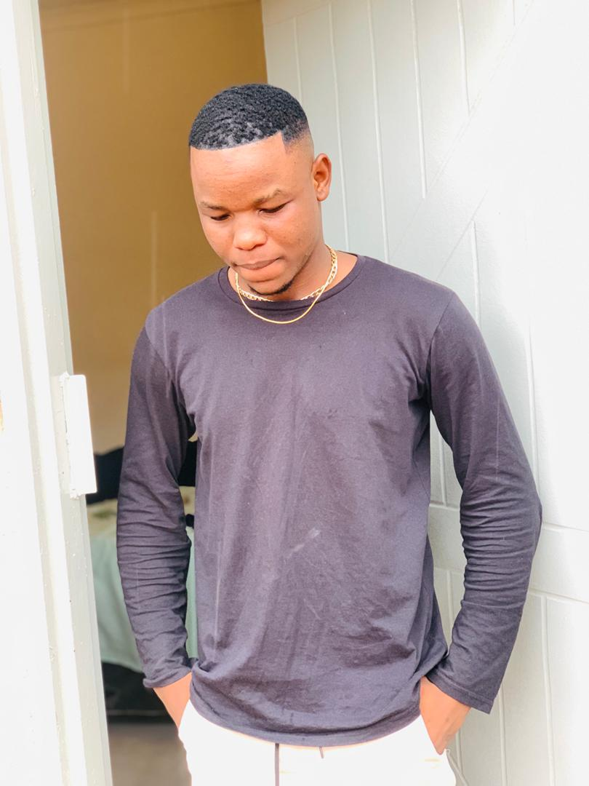

Get to know me and my journey in tech

Hi, I’m Logan, a 20-year-old Computer Systems Engineering student at BAC, turning 21 on the 25th of May. I’m passionate about programming, technology, and building projects that explore the digital world in creative ways. I’d describe myself as an ambiverted introvert—comfortable diving deep into code or ideas on my own. I navigate life with curiosity and focus, always seeking to learn, experiment, and push the boundaries of what I can create. Whether it’s developing new software, exploring tech trends, or improving my gameplay in Call of Duty Mobile, I’m driven by a mix of passion, strategy, and a little bit of controlled chaos.